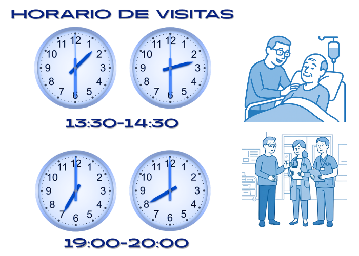

Esta hoja informativa está dirigida a los familiares de pacientes ingresados en la Unidad de Ictus. Resume cómo funciona la unidad, qué cuidados recibe el paciente y qué pueden esperar durante el ingreso.
📌 ¿Qué es un ictus?
El ictus es una alteración brusca de la circulación cerebral que provoca un déficit neurológico. Puede ser:
- Ictus isquémico: obstrucción de una arteria cerebral.
- Ictus hemorrágico: sangrado dentro del cerebro o sus cubiertas.
El tratamiento rápido y especializado mejora el pronóstico. Por ello, su familiar ha ingresado en una Unidad de Ictus.
➡️ ¿Por qué su familiar está en la Unidad de Ictus?
El ingreso en la Unidad de Ictus permite una monitorización neurológica y cardiaca continua, así como un control estricto de la tensión arterial, la glucemia y otros parámetros que influyen directamente en la evolución del ictus. En este entorno se aplican medidas específicas para prevenir complicaciones como la aspiración, las infecciones o la trombosis, y se administran los tratamientos especializados indicados según el tipo de ictus. Además, se realiza una valoración temprana por rehabilitación. Todos estos cuidados, especialmente durante las primeras 48–72 horas, contribuyen a limitar la extensión final de la lesión cerebral, por lo que la atención intensiva en esta fase es fundamental para el pronóstico del paciente.🧭 Funcionamiento de la Unidad
- Horarios de visita: Durante el horario
de visita puede permanecer una persona por paciente. Los
familiares pueden ir intercambiándose dentro de dicho
horario. Los tramos de visita son:
- 13:30-14:30
- 19:00-20:00
- Higiene: lavado de manos.
- Acompañamiento: no suele permitirse acompañamiento continuo para garantizar control clínico y descanso.
- Objetos personales: evite traer objetos de valor.
⌛ Primeras 24–72 horas
El tiempo de estancia habitual en la Unidad de Ictus es de 48–72 horas, ya que es el periodo crítico en el que las medidas de monitorización y tratamiento pueden limitar la extensión del daño cerebral, prevenir complicaciones y detectar de forma precoz cualquier empeoramiento.
Durante este tiempo se van realizando las pruebas diagnósticas necesarias para definir el tipo de ictus, su causa y el mejor tratamiento, así como aquellas que se precisen si aparecen complicaciones en la evolución.
Una vez superada esta fase y alcanzada la estabilidad clínica, el paciente suele ser trasladado a la planta de hospitalización de Neurología, donde se continúan los cuidados, estudios complementarios y la planificación de la rehabilitación.
La evolución en este periodo puede ser muy variable. Algunos pacientes presentan mejoría, mientras que otros pueden mantenerse sin cambios o incluso experimentar cierto empeoramiento según la naturaleza del ictus y su evolución clínica.
🗨️ Comunicación con el equipo sanitario
La información clínica se
transmite preferentemente durante los horarios de visita,
momento en que el médico responsable puede informar del
diagnóstico, la evolución y el plan de tratamiento.
Si surgiera alguna incidencia
o complicación relevante, el equipo sanitario
contactará con el paciente o su familia para proporcionar la
información necesaria fuera del horario habitual.
La información se ofrece en primer lugar al propio paciente, siempre que su situación lo permita. Asimismo, podrá comunicarse a sus familiares u otras personas únicamente si el paciente las autoriza o, cuando no sea posible obtener dicha autorización, a sus representantes legales.
El personal de enfermería es la referencia para dudas prácticas sobre cuidados, horarios y funcionamiento de la Unidad.
🛡️ Prevención de complicaciones
💪 Rehabilitación y recuperación
🫂 ¿Qué pueden hacer los familiares?
